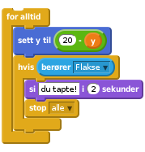
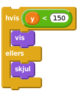
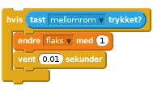
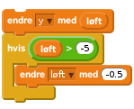
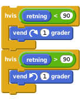
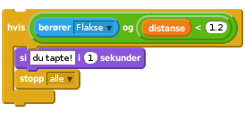
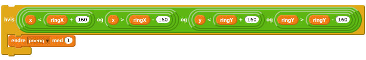

1.6
3D-Flakser, Del 2
Velkommen til andre og siste del av 3D-flaksefugl! I denne delen skal vi få flakse til å flakse som en fugl, og snu seg i luften når vi svinger med piltastene. Til slutt skal vi gjøre det slik at man får poeng når man flyr igjennom en ring og taper hvis man treffer en ring. Etter det er det opp til deg; lag en meny, lag flere vanskelighetsgrader eller lag noe helt annet!

Vi begynner med et enkelt steg som gjør spillet litt mer realistisk. Siden figuren flyr igjennom himmelen, så kan vi forvente at hvis man ikke flakser, så treffer man før eller siden bakken. Dette gjør vi med en ny figur som vi kaller bakken.
Lag en ny figur som heter bakken. Tegn en drakt til den. Det enkleste er å bare fylle den nederste tredjeparten av tegneområdet med grønt. Vi starter med å gi den følgende skript
![Når jeg mottar [nytt spill v]
gå til x: (0) y: (-300)
sett størrelse til (200) %](5555f74400256f6e7665cfecc2101f114884e23c.png)
Nå bør bakken ligge nederst i scenen når spillet begynner Hvis ikke den gjør det kan du endre litt på tallene.
Nå vil vi at den skal følge med flakse, det vil si: når flakse er høyt oppe (y er stor) så skal bakken gå nedover, og når flakse er langt nede så er bakken høyt oppe. Hvis flakse berører bakken skal spilleren tape. Vi legger til følgende for alltid-løkke i skriptet til bakken,

Til slutt så vil vi helst at bakken skal forsvinne når Flakse flyr veldig høyt. Det kan vi gjøre med skjul og vis kommandoene, slik

Hvis du har gjort del en av 3D-flaksefugl riktig så kan du nå styre flakse-figuren gjennom ringene med piltastene. Det er to ulemper med det: det er et veldig lett spill, og det er ikke sånn fugler flyr. Vi vil at flakse faktisk må flakse for å holde seg i luften. Så derfor må vi endre litt på skriptene til flakse-figuren slik at den flakser når vi trykker mellomromtasten.
For å holde styr på hvor mange ganger spilleren har trykket på mellomrom så lager vi en variabel flaks som gjelder kun for flakse-figuren.
Vi må slette testene som sjekker om oppeller ned tastene trykkes og erstatte dem med

Alt som skjer nå er at flaks økes med én hver gang mellomrom trykkes. Vi lager et nytt skript hos Flakse som tar seg av flaksingen.
Lag en ny variabel. Kall den løft, og la den gjelde kun for denne figuren. Denne variabelen skal fortelle oss hvor fort flakse skal flyttes opp eller ned.
Legg inn en sett løft til 0-kloss et sted før spillet starter.
Sett inn disse klossene først i hovedløkken til Flakse:

Til slutt lager vi et nytt skript hos Flakse slik:
![når jeg mottar [nytt spill v]
for alltid
gjenta til ((flaks) = (0))
endre [flaks v] med (-1)
hvis ((løft) < (5))
endre [løft v] med (2)
slutt
hvis ((løft) < (0))
sett [løft v] til (0)
slutt
slutt
slutt](8e430200cee5ca4f35ab0567d4862145664df6f9.png)
Nå kan du justere litt på tallene i skriptene over for at flakse flyr slik DU vil!
For at spillet skal se best mulig ut så vil vi at flakse skal rotere i luften når vi holder piltastene inne. Litt som et fly som går inn for landing. Oppførselen vi ønsker når (for eksempel) høyre piltast trykkes er denne: når piltasten først trykkes skal figuren peke mot høyre, og der skal den holde seg så lenge piltasten holdes inne. Når piltast slippes skal figuren rotere sakte tilbake til sin vanlige posisjon.
Dette får vi til ved å endre litt på hovedskriptet til flakse.
Legg til klossene pek i retning 135 og pek i retning 45 i testene som sjekker om henholdsvis høyre og venstre piltast trykkes. Prøv spillet. Peker figuren i riktig retning?
Nå vil vi at figuren skal rotere tilbake til vannrett når piltastene ikke trykkes lenger. Det kan vi enkelt få til ved å legge til disse klossene under testene som sjekker om piltastene trykkes.

Disse klossene sørger enkelt og greit for at figuren alltid prøver å peke mot retning 90 (som er vannrett for figuren). Når bør flyvningen til flakse se ganske bra ut!
Nå ønsker vi at flakse skal få poeng hver gang han flyr igjennom ringene, og taper om han treffer en ring. Denne oppførselen skal vi kode i når jeg starter som klon-skriptet til ring-figuren.
Vi begynner med å sjekke om flakse berører den ringen som ligger nærmest. Husk at det er distanse.{blockorange} variablen til ringen som forteller oss hvor nærme ringen er. Så vi må hele tiden sjekke om flakse berører ringen, og om ringen faktisk er nærme. Du må legge til denne klossen et sted i skriptet til ring-klonene.

Nå stopper spillet om man treffer en ring som er nærme. Hvis du vil kan du kode noe annen oppførsel når man treffer en ring (kanskje man bare mister et liv, eller det spilles en lyd?)
Så ønsker vi å få poeng når vi fly gjennom ringene. Lag først en variabel poeng som gjelder for alle figurene. Nå må vi sjekke at variablene x og y, som sier hvor flakse-figuren er, ikke er altfor langt unna ringX og ringY. Vi legger til følgende klosser rett under hovedløkken til ringene, slik at det siste ringene gjør før de slettes er å sjekke om flakse er inni.

Fungerer skriptet som det skal? Hva er det vi egentlig sjekker i den siste hvis-testen?
Nå er vi igrunn ferdig med det viktigste i spillet. Men det er fremdeles masse spennende igjen du kan prøve: